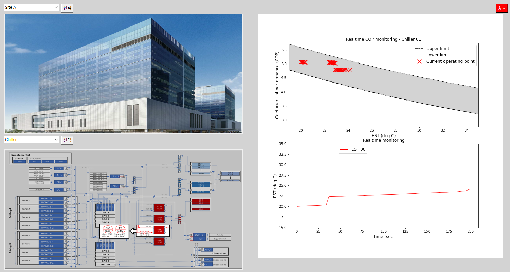
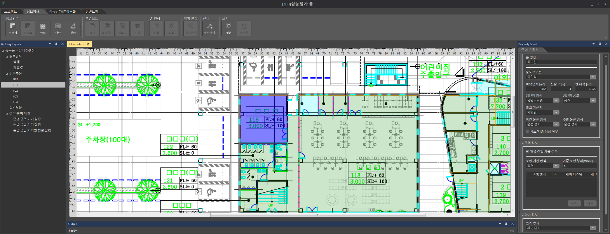

Finding the Parameters
입자군집 최적화가 존 RC 모델의 변수 11개를 찾아가는 과정과 보정 전후의 실내온도 오차를 비교합니다.
오주홍 교수가 참여한 국가 R&D·산학협력 과제와 개발 도구를 소개합니다. 물리 모델과 운영 데이터를 활용한 건물·설비 모델링, 운영 진단, 운전 전략 연구와 설계·성능평가 도구 개발 경험을 담았습니다.
건물·설비의 성능 예측, 운영 진단, 제어 전략 연구에 참여한 과제입니다.
현재 수행 중인 과제입니다. 주택용 전기 사용량 마이데이터로 누진 구간 진입을 미리 예측하고 알리는 서비스의 분석 엔진을 개발합니다. 요금 계산식에 청구·검침 이력을 결합해 가구별 사용량을 예측하는 방식으로, 하이브리드 예측 연구를 가구 단위로 넓힌 것입니다.

수열원의 온도 변화에 대응하는 대규모 히트펌프 시스템의 모델링과 최적제어 연구에 참여했습니다. 히트펌프·축열·건물 부하를 연계한 실증플랜트의 운전 전략을 검토하는 연구입니다.

박사학위 연구의 기반이 된 과제입니다. 15층 사무용 건물의 BAS 운영 데이터와 설비 사양을 물리 모델에 연결해 Digital Twin을 구축했습니다. 이를 학습 환경으로 활용한 강화학습 제어는 Digital Twin 내 평가에서 기존 규칙 기반 제어 대비 가스 소비량을 약 23% 줄였습니다.

HVAC 이상진단(FDD)에 활용할 물리 모델과 데이터 기반 모델을 개발했습니다. 관련 연구로 BEMS 운영 데이터 기반 진단 프레임워크 논문(설비공학 논문집, 2026)과 특허 「HVAC 시스템의 고장 진단 방법 및 이를 이용한 장치」(2024)가 있습니다.

BEMS 운영 데이터로 제로에너지건축물의 설비 상태와 에너지 사용 특성을 진단하고, 모니터링 체계와 운전 방식의 개선 방안을 검토했습니다.

레이더 센서 데이터로 재실자의 낙상을 감지하는 경량 머신러닝(TinyML) 모델을 개발했습니다. 엣지 디바이스에서 직접 추론하는 AI 모델의 구현 경험입니다.

시간에 따른 설비 성능 변화를 추적하는 Digital Twin 시뮬레이터 모듈을 개발했습니다. 냉동기의 설계 성능과 운영 데이터를 비교해 운전 상태와 성능 변화를 파악하는 도구입니다.

과제에서 얻은 결과를 40초 안팎의 애니메이션으로 보여 줍니다. Play를 누르면 재생됩니다.
입자군집 최적화가 존 RC 모델의 변수 11개를 찾아가는 과정과 보정 전후의 실내온도 오차를 비교합니다.
같은 잔차를 고정 임계값과 적응형 기대범위로 나란히 판정해 오탐이 어떻게 줄어드는지 보여 줍니다.
같은 건물, 같은 5일을 원제어와 강화학습 제어로 나란히 운전해 가스 사용량과 실내온도를 비교합니다.
레이더 센서와 엣지 장치로 카메라 없이 낙상을 감지하고 보호자에게 알리는 과정입니다.
산업체·연구기관 재직 중 개발에 참여한 실무 프로그램입니다. 건물의 물리적 특성과 설비 계산 방법을 소프트웨어로 구현해 설계와 에너지 성능평가에 활용했습니다.
도면을 바탕으로 공간과 설비 정보를 입력해 제로에너지빌딩의 성능을 평가하는 서비스 플랫폼을 개발했습니다. 패시브·액티브 요소기술의 정보 목록도 함께 구축했습니다.

냉난방 수배관의 배관·펌프·밸브 선정을 지원하는 계산 프로그램을 개발했습니다. 개발 과정과 실무 활용 가능성 평가 결과를 학술지 논문(한국건축친환경설비학회, 2019)으로 발표했습니다.

대형 사업장의 에너지 성능 개선을 위해 절감 조치를 진단하고 예상 효과를 산정하는 알고리즘과 프로그램을 개발했습니다.

| Period | Project | Funder |
|---|---|---|
| 2026.10 – 현재 | 마이데이터 기반 지능형 누진요금 예측 및 사전경보 서비스 | 한국인터넷진흥원 |
| 2025년 참여 | 수열원 변동 대응 대규모 중앙집중형 수열에너지 실증플랜트 기술 개발 | 환경부 |
| 2025.05 – 2025.11 | 제로에너지건축물 실태조사 및 모니터링 운영개선 지원 | 한국에너지공단 |
| 2024.11 – 2025.12 | Edge device 레이더 센서 기반 재실자 낙상감지 기술 개발 | Infineon |
| 2023.06 – 2024.01 | 디지털트윈 에너지 시뮬레이터 | 삼성 |
| 2021.09 – 2022.07 | 설비상태진단을 위한 TRNSYS 모델 개발 및 학습기반 시스템 모델링 | 한국건물에너지기술원 |
| 2021.05 – 2026.04 | 자율운전 기반 지능형 건물 에너지 환경 통합 관리시스템(iBEEMS) 개발 | 한국에너지기술평가원 |
| 2020.05 – 2024.12 | 에너지 절감형 스마트조명 플랫폼 기술 개발 및 실증 | 한국에너지기술평가원 |
| 2020.04 – 2021.12 | 주택용 전력 품질데이터 AI 분석을 통한 벤치마킹 시스템 개발 | 국토교통과학기술진흥원 |
| 2019.04 – 2022.12 | 노후 소규모 건축물 품질 및 성능 향상을 위한 리모델링 기술 개발 | 국토교통과학기술진흥원 |
| 2018.10 – 2021.09 | 건물에너지 효율향상을 위한 IoT 기기간 연동 지능형 공조제어시스템 | 한국에너지기술평가원 |
| 2017.12 – 2021.05 | 유통 물류시설 에너지관리용 ESS 기반 융복합 제품 개발 및 실증 연구 | 한국에너지기술평가원 |
| 2017.12 – 2020.11 | 대형사업장의 에너지절감 리트로핏 솔루션 | 한국에너지기술평가원 |
| 2016.12 – 2018.09 | 건물용 냉난방배관·순환펌프·유량조절밸브 선정을 위한 수배관시스템 계산 프로그램 개발 | 한국에너지기술평가원 |
| 2016.11 – 2019.09 | 제로에너지빌딩 요소기술 패키지(패시브&액티브) 융복합화 및 실증연구 | 한국에너지기술평가원 |
| 2016.08 – 2017.12 | 건물 난방 배관 세정기 기술개발 | 한국에너지기술평가원 |
| 2016.04 – 2018.12 | 차세대 건자재 공간단위 에너지·환경성능 시험 및 보완을 위한 실증연구 | ㈜LG하우시스 |
| 2015.06 – 2018.05 | 건물에너지 시뮬레이션과 스마트 미터링 기술을 활용한 중소형 건물에너지 통합진단기술 개발 및 실증 | 한국에너지기술평가원 |
| 2011.09 – 2014.12 | 건물에너지 성능 평가모델 및 성능개선 프로세스 표준화 개발 | 국토교통부 (단국대학교) |